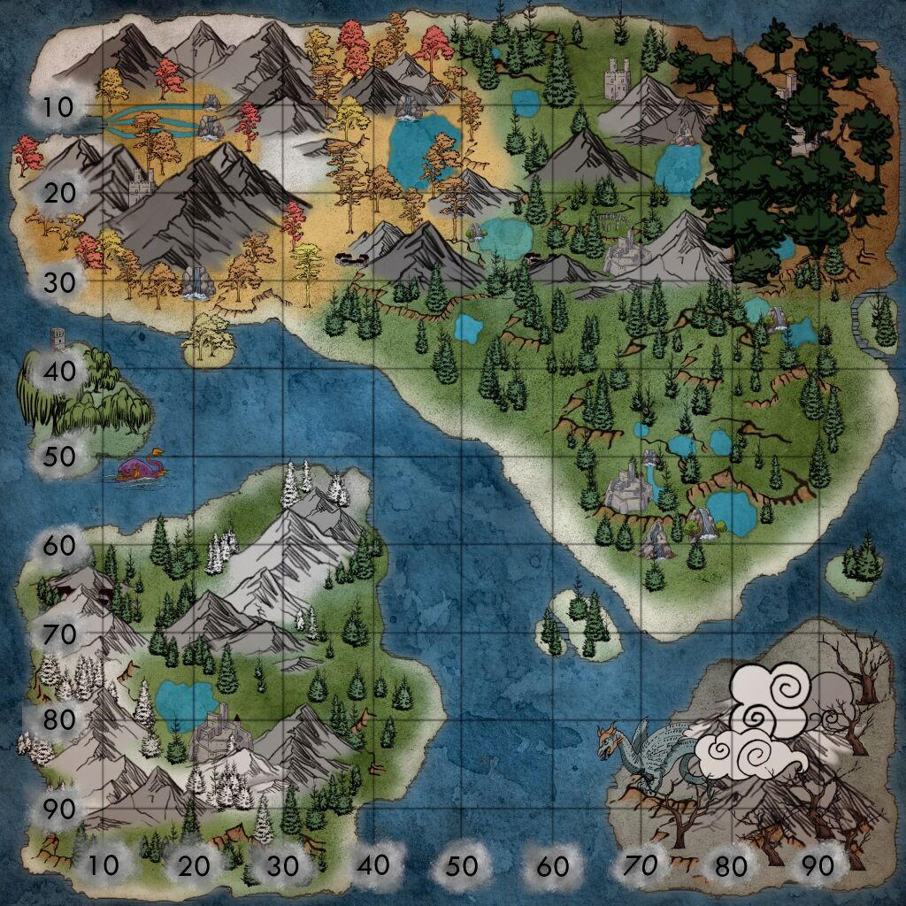
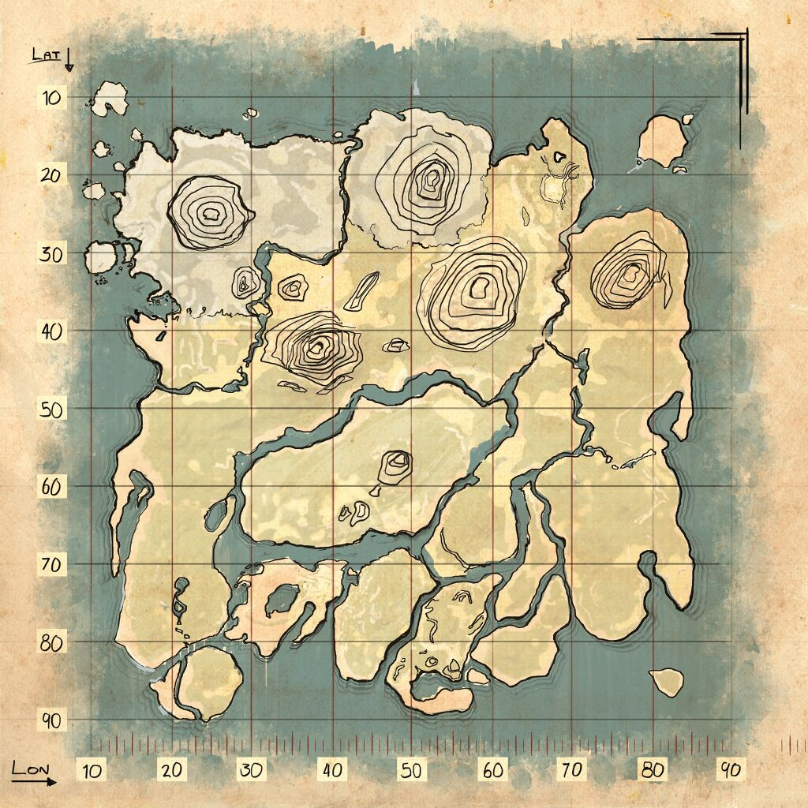

A R G E N T O P R O
🦖
LA CRÓNICADE LAS ISLAS
Cómo seis sobrevivientes se animaron a los gigantes y fundaron un pueblo
TEMPORADA I · OCTUBRE – NOVIEMBRE 2026
Cómo seis sobrevivientes se animaron a los gigantes y fundaron un pueblo
Esta es la historia de un servidor argentino de ARK: Survival Evolved. No es la historia de un juego: es la de la gente que se juntó a vivirlo. Un lugar donde los dinosaurios son enormes, las noches son largas y nadie camina solo por mucho tiempo.
El servidor se llama ArgentoPro ARK x5, porque todo lo importante rinde cinco veces más: la experiencia, la domesticación y la recolección. Entran hasta 70 jugadores y los personajes pueden viajar de un mundo a otro, como si todos fueran regiones de un mismo país.
| Experiencia | x5 |
| Domesticación de dinos | x5 |
| Recolección y bolsas de recursos | x5 |
| Fiestas de fin de semana largo | x10 |
| Jugadores por mundo | hasta 70 |
| Moneda del pueblo | ArgenCoins (AC) |
Dos mundos fueron fijos desde el primer día: The Island y Fjordur. Más tarde se les sumó Lost Island. Y hay un cuarto mapa, el viajero, que cambia cada semana y que decide la gente votando.
Las cifras de este libro son reales, tomadas de los registros del servidor hasta el 21 de noviembre de 2026.
Fue el 11 de octubre de 2026, a las 17:01, en Fjordur, la tierra de los acantilados y los vikingos. En el chat del servidor apareció una sola palabra: «hola». La escribió Trup3r, el primero en llegar. Nadie contestó, porque todavía no había nadie. Un rato después volvió a probar: «wenas». Y después: «holiwis».
Esa misma tarde su tribu, los Cazalokas, domó el primer dino de la historia del server: un Parasaurio nivel 127. Antes de que terminara la noche ya había sumado un Pteranodon y dos Argentavis. A la mañana siguiente, a las cinco y media, cayó un Rex nivel 217.


Mientras tanto, en el otro extremo del archipiélago, la primera en asomarse a La Isla fue Visholi, que llegó a las 18:56 y domó un Pteranodon nivel 67. Dos mundos, dos pioneros, y una sensación en el aire: esto recién empezaba.
The Island es el mapa de siempre: playas, selva, pantanos, el volcán que arde de noche y bichos que no perdonan un descuido. Esa primera noche, a las 23:38, entró al mundo alguien que iba a cambiarlo todo: IvyLuna.
Nadie le prestó demasiada atención. A la mañana siguiente, a las nueve menos tres, domó su primer dino: un Dodo nivel 57. El bicho más humilde del bestiario. Pero hay quienes empiezan por el dodo y terminan con el pueblo entero a cuestas.

IvyLuna le puso nombre a lo que faltaba: un lugar donde se pudiera comprar, vender, charlar y no morir en el intento. Dicen que el primer mercadito nació de una sola idea: «¿y si hacemos que esto sea de todos?». De ahí salieron las monedas del pueblo, las tribus, las leyendas, y las ganas de volver cada día.
Hoy IvyLuna es nivel 105, tiene 24 dinos domados y es la jugadora que más horas acumula en todo el servidor.
Uno por uno, fueron llegando. Se cruzaron en la playa, se prestaron un dino, se ayudaron a matar a un gigante y, casi sin darse cuenta, se volvieron familia. Estos son los seis que abrieron el camino:
Seis nombres, seis personalidades, y una misma costumbre: ayudarse. La que quedó grabada en el pueblo: «el que cae, se levanta; el que doma, comparte».
Los primeros días fueron de huir. De correr hasta el agua cuando se escuchaba un rugido. De aprender que un Giganotosaurio no se negocia y que un Yutyrannus llama a tus animales con un grito y se los come.
Con el tiempo aprendieron a enfrentarlos. Los hubo que se animaron a más: el récord de nivel domado lo tiene un Rex Tek nivel 269, capturado por Mono en Fjordur el 1 de noviembre. Muy cerca, un Estegosaurio Tek nivel 268 que domó Victore en Lost Island.
Y llegaron las leyendas. El dios Argento baja a la isla con historias: un dragón que cayó del cielo, una ballena que lloraba estrellas, un vikingo que comió de más y quedó convertido en Andrewsarchus, hasta la venganza de la novia de xMONOx, que terminó transformada en murciélago. Quien doma el bicho de la leyenda se lleva su nombre en grande.
Y cuentan en la fogata de Don Ramón que hay un Rex y una Carcha gigantes —El Patrón— que a veces se pasean sueltos por La Isla. Mil ochocientos dardos, dicen. Todavía hay quien quiere intentarlo.
Hubo una idea que le dio ritmo a todo: que cada semana el servidor tuviera un mapa distinto. Cada lunes a las 6 de la mañana, el mapa viajero se va, y entra el que votó la gente. Así fue el recorrido:
Cada vez que el mapa cambia, la gente lleva todo con ella: sus personajes, sus dinos y sus cosas. Por eso Fjordur, La Isla y Lost Island se volvieron la casa, y el mapa viajero, la aventura de la semana.
Primero fueron chozas de paja pegadas a una piedra. Después, casas de madera con un fogón. Más tarde llegaron las paredes de metal, los fabricadores, las represas y los fuertes que se ven desde lejos. Cada base tuvo su historia: una puerta que alguien dejó abierta, un Rex que se salvó de milagro, una pared que se agrandó de noche.
La gente se juntó en tribus, y cada una puso su bandera. Estas son las que hoy mandan en las islas:
| Los Trolistas · lidera IvyLuna | The Island |
| Las Pachulitas · lidera IvyLuna | Lost Island |
| Las Chulitas · lidera IvyLuna | Crystal Isles |
| Tribu de Kempysito | Genesis 1 y 2 |
| Monolandia · lidera xMONOx | Fjordur |
| Tribu de xMONOx | Ragnarok |
Las tribus juntan ACT, los puntos de tribu: jugando, domando y haciendo misiones. Con eso el líder compra planos de armas, monturas mejoradas y hasta un Tek Stryder recolector. Cada mes, la tribu con más puntos es la Mejor Tribu del Server.
Y cuando una base queda abandonada, no se pierde: sus dinos van al Martillero Público, donde cualquiera puede ofertar por ellos. Nada se desperdicia en esta isla.
Con las bases llegó el pueblo. No uno cualquiera: un pueblito con diez vecinos que tienen su historia, su oficio y su opinión sobre quién manda. Si pasás por la plaza, vas a escucharlos hablar entre ellos, discutir y hasta pedirte ayuda.
Y como nada es tranquilo en esta isla, los vecinos tienen sus dramas: un Giganotosaurio que se comió todas las ovejas del corral, cuatro Yutyrannus que llaman a los animales para comérselos, un Espinosaurio que se adueñó del río. Cada pelea termina igual: «el que me traiga los trofeos, se lleva la recompensa». Hay premios en ArgenCoins y hasta una montura ascendente a elección.
Cuarenta días después de aquel primer «hola», así se ve la isla:
La experiencia corre cinco veces más rápido que en un servidor común, y los fines de semana largos, diez veces más. Por eso los más fuertes ya pasaron los seis millones de puntos de experiencia.
| 1. Trup3r · nivel 114 | 6.048.538 XP |
| 2. Milider · nivel 111 | 5.185.908 XP |
| 3. Potu · nivel 109 | 4.648.538 XP |
| 4. KratosMache · nivel 108 | 4.478.538 XP |
| 1. Karoo | 32 dinos |
| 2. TataPeck | 26 dinos |
| 3. IvyLuna | 24 dinos |
| 4. Potu | 23 dinos |
En una isla donde nadie duerme del todo, algunos se ganaron un lugar de honor por pura constancia. Estas son las personas que más horas pasaron conectadas, contadas desde la inauguración:
Horas aproximadas, calculadas con el tiempo conectado que registra el servidor.
Los que más charlaron también se ganaron su lugar: OnlyWOLF es el más hablador del chat, con más de seiscientos mensajes, seguido de cerca por IvyLuna. En el pueblo se dice que cuando OnlyWOLF se queda callado, es porque algo está por pasar.
Todos ellos tienen algo en común: llegaron para jugar un rato y se quedaron a construir.
Domar es solo el principio. Después viene lo mejor: criar. En estas semanas nacieron más de 240 bebés Shadowmane, más de 220 Rex, cientos de Megaterios, Deinonicos y Desmodus, y hasta crías de Fenrir y de Guiverno de Fuego.
Cada uno cruza lo mejor que tiene, busca la mutación perfecta y sueña con el dino ideal: el de más vida, el de más daño, el que corre más. En el servidor hay un casco especial, el Casco Stats, que mirando a un dino te dice sus puntos, sus padres y sus mutaciones, y si vale la pena criarlo.
Los que viven de la cría fundaron su propio lenguaje: «sacale la hembra», «cruzalo con el de vida», «ojo con la impronta». Se oyen en la plaza como quien habla del clima.
Y en La Selva Argento, un tablero de aventuras, cada tirada de dado puede ponerte frente a un Raptor, a un Argentavis o al mismísimo Rex.
En una isla llena de bichos, también hay lugar para el amor. En el servidor la gente se casa en una ceremonia con anillos, fuegos artificiales y un anuncio para todos. Los casados se ven en rosa en la lista de la party, juntos cargan mejor el peso y se teletransportan el uno al lado del otro con un solo comando. IvyLuna y Karoo fueron de las primeras parejas.
Y cuando cae la noche, la plaza se llena de risas: truco argentino y uruguayo, generala, chinchón, batalla naval, cuatro en línea, el cacho de los dados de farol, el veintiuno y la ruleta de El Gaucho. Hay partidas entre amigos con un pozo de por medio, donde se canta «¡quiero retruco!» desde el celular.
Hay también fiestas que paran el reloj: los fines de semana largos, con experiencia y domesticación al doble de lo normal. Sábado a las seis de la mañana empieza el festejo y el martes, al reinicio, vuelve la normalidad. Es el momento en que las tribus salen a domar todo lo que se mueva.
Una noche alguien preguntó: «¿y si mis dinos fueran cartas?». Así nació el Duelo de Dinos. Cada jugador arma un mazo con diez de sus bichos reales, con su nivel, sus estadísticas y sus mutaciones, y los enfrenta a los de otro. Hay tres tipos que se ganan en ronda, los alados vencen a los depredadores, estos a los herbívoros y los herbívoros a los alados. Los gigantes piden un sacrificio para entrar al campo, y las parejas macho y hembra pelean mejor juntas.
Después vinieron el ajedrez, las damas españolas, el dominó y el piedra, papel o tijera. Se sumaron la carrera de dinos y la arena de bichos, y los juegos contra la casa: el cohete que todos miran subir y nadie quiere soltar primero, el plinko, las minas y la pesca, con su torneo semanal por la pieza más pesada.
Y como toda buena pelea merece un final, llegaron los torneos: ocho jugadores, eliminación directa, y el campeón se lleva la mayor parte del pozo. Los sábados a las 20:30 se juega el Duelo de Dinos y los domingos a la misma hora la Carrera de Dinos. Todo se juega desde la F1, en el botón de la página, sección Juegos.
Esta crónica termina acá, pero la historia sigue escribiéndose todos los días. Cada lunes llega un mapa nuevo. Cada semana hay una leyenda por domar, un vecino que pide ayuda y un gigante rondando por las colinas.
Seis sobrevivientes llegaron a una isla llena de dinosaurios en octubre de 2026. Hoy son más de trescientos, tienen un pueblo, una moneda, una tribu en cada mapa, un código de honor y una forma de reírse del peligro que solo se aprende acá.
Y la puerta sigue abierta. No hace falta ser experto: hace falta ganas, un poco de paciencia y la costumbre de saludar. Porque, como aprendimos aquel 11 de octubre, todo gran servidor empieza con alguien escribiendo «hola».
¡Nos vemos en la isla!
Servidor argentino de ARK con 4 mundos, mapa viajero semanal, pueblo con vecinos y leyendas, tribus, mesas de juego y mucho más.
 Discord
DiscordExperiencia, domesticación y recolección x5 · Fines de semana largos x10 · Hasta 70 jugadores